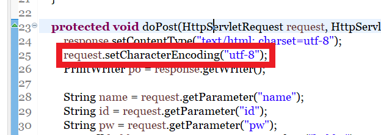
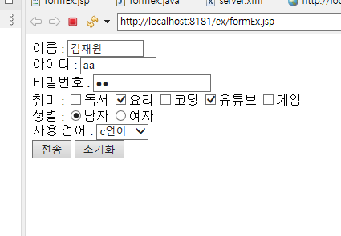
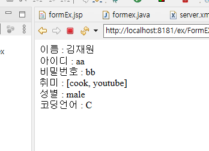
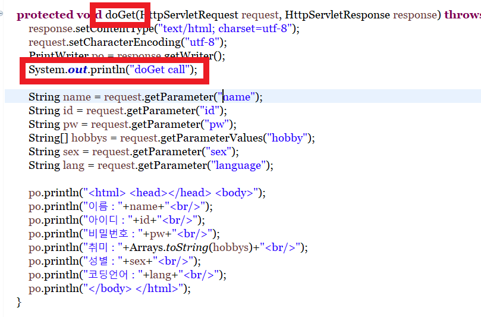
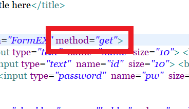
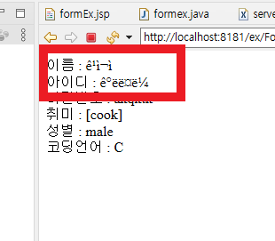
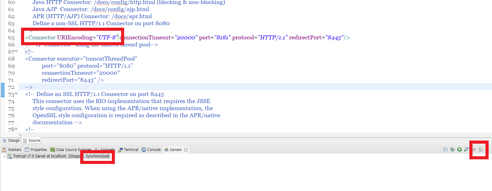

1
-

doPost에서 읽어오는 한글을 제대로 받아오기 위해서 위와같은 설정을 해줍니다.
-

설정 후에 다시 jsp파일로 돌아가서 똑같이 값을 제출합니다.
-

이번에는 입력된 한글이 정상적으로 출력되는 것을 볼 수 있습니다.
-

동일한 코드를 doGet에서도 실행하기 위해서, 콘솔 출력문과 함께, doGet으로 옮깁니다.
-

get메소드로 실행하기 위해서 form태그의 method를 get으로 바꾸어줍니다.
-

doGet에서는 request.setCharacterSet설정을 변경하여도 읽어들이는 한글이 깨져서 나오게됩니다.
-

이를 해결하기 위해서, server.xml파일을 편집해야합니다.
-

server.xml파일에서 Connector에서 포트가 생성된 서버와 일치하는 태그를 찾은 후,
URIEncoding="UTF-8"을 추가한 뒤, 실제 서버파일과 Syncronized시켜줍니다.
-

설정 후, JSP파일을 실행하여 확인하면 doGet에서도 한글이 정상적으로 출력되는것을 확인할 수 있습니다.